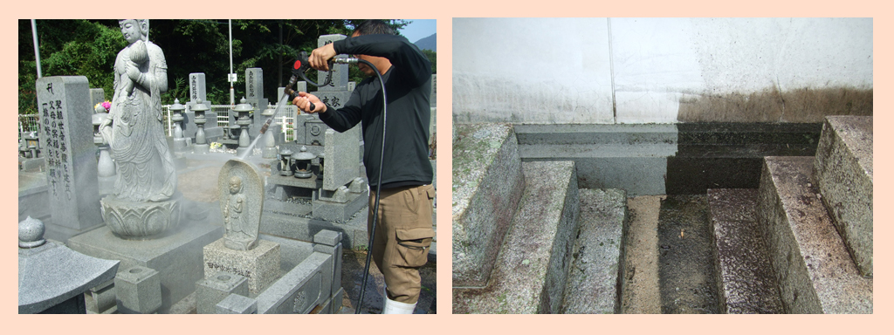
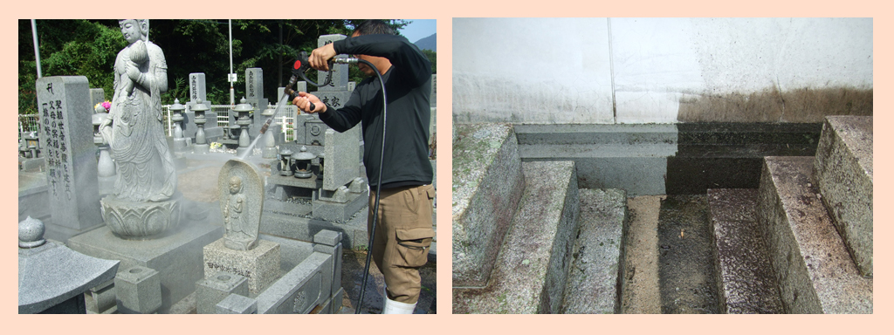

秋から冬へ。墓苑清掃随時受付中です。
お彼岸のお墓参りから年末のお墓参りの時期、 寒くなるこの季節の清掃は重労働です。遠方にお住まいで清掃が困難方、お身体が不自由な方にお勧めです、お早めにご連絡ください。
広島でリフォームをご検討中の方へ

告知
お彼岸のお墓参りから年末のお墓参りの時期、 寒くなるこの季節の清掃は重労働です。遠方にお住まいで清掃が困難方、お身体が不自由な方にお勧めです、お早めにご連絡ください。

2023年は、6月10日(土)、11日(日)の2日間で開催されることになりました。
G7サミットの影響で開催時期が変更となりました。
来年も弊社で「花の塔」を施工させていただきます。
株式会社テクニカルは、1991年に創業し、おかげさまで30周年を迎えました。
引き続きコロナ禍で厳しい生活環境が続きますが、これからもお客様のニーズに応え、より一層お客様から信頼される企業を目指してまいります。
本年もよろしくお願い申し上げます。
テクニカルは、お客様のニーズに応えるべくサービスを展開し、
お客様の目線に合わせた対応を心掛ける企業を目指しております。
ご相談から工事完了まで安心サポート。わかりやすく丁寧にご説明いたします。
お家に関するリフォーム・ハウスクリーニング・お墓の清掃など
暮らしのお困りごとは、お気軽にお問い合わせください。
ステップ１
お問合せ後に、お客様のお宅に担当者が伺い、見積いたします。見積費用は無料です。
ステップ２
あらかじめお客様とご相談して設定した日時に伺い、専門のスタッフが対応し、作業をいたします。
ステップ３
作業内容に不備がないか確認し、お引渡しを行います。
また、画像付きの作業報告書をご提出いたします。遠方の方からのご依頼でもご安心ください。
東広島市、呉市、廿日市、佐伯区、安佐南区、安佐北区、東区、中区、西区、南区、安芸区、安芸郡
※広島県内エリアに限ります。※場所により、一部エリア対象外になる場合があります。
手作業により
墓石を丁寧に洗います。
料金
15,000円～
高圧洗浄機で
古い汚れも洗い落とします。
料金
50,000円～
＊お墓参り代行もご利用いただけます。